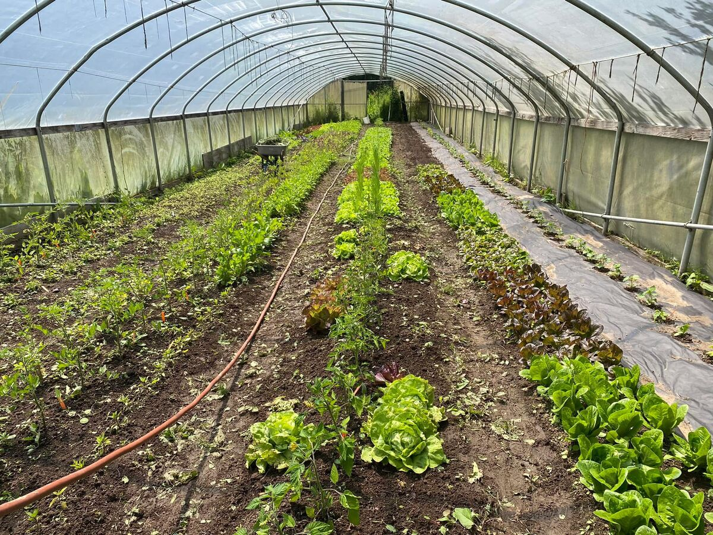
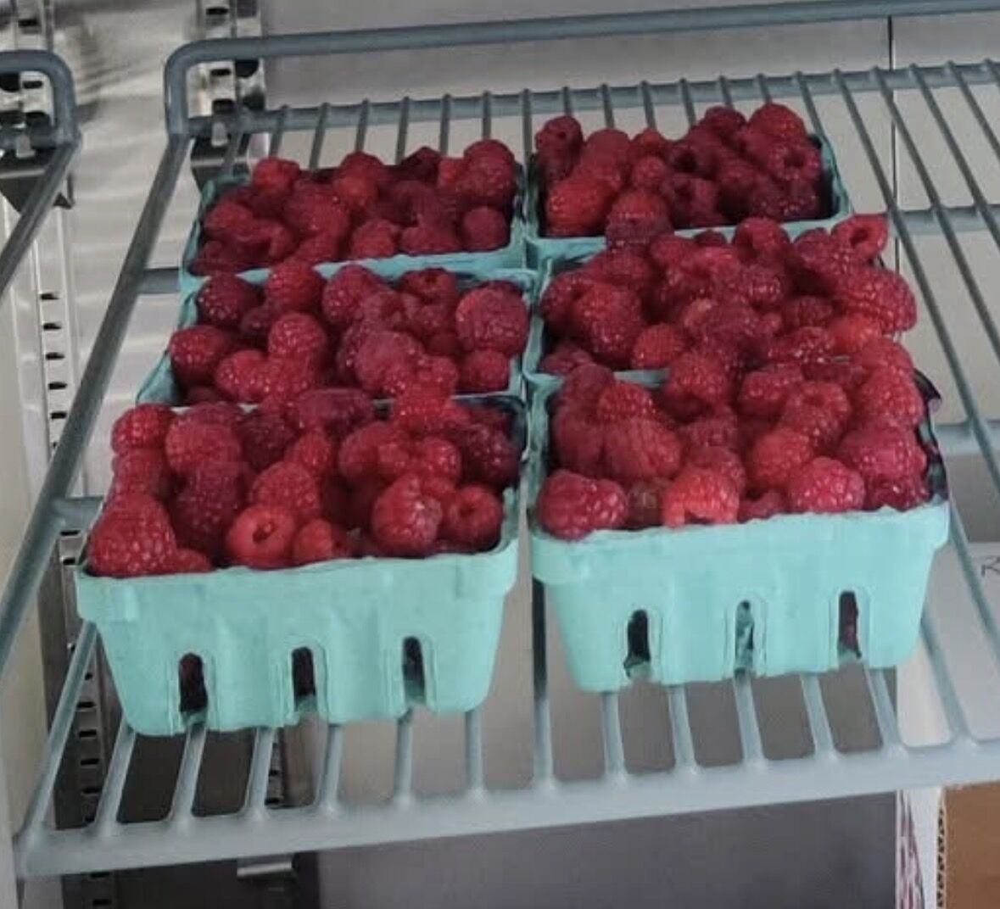
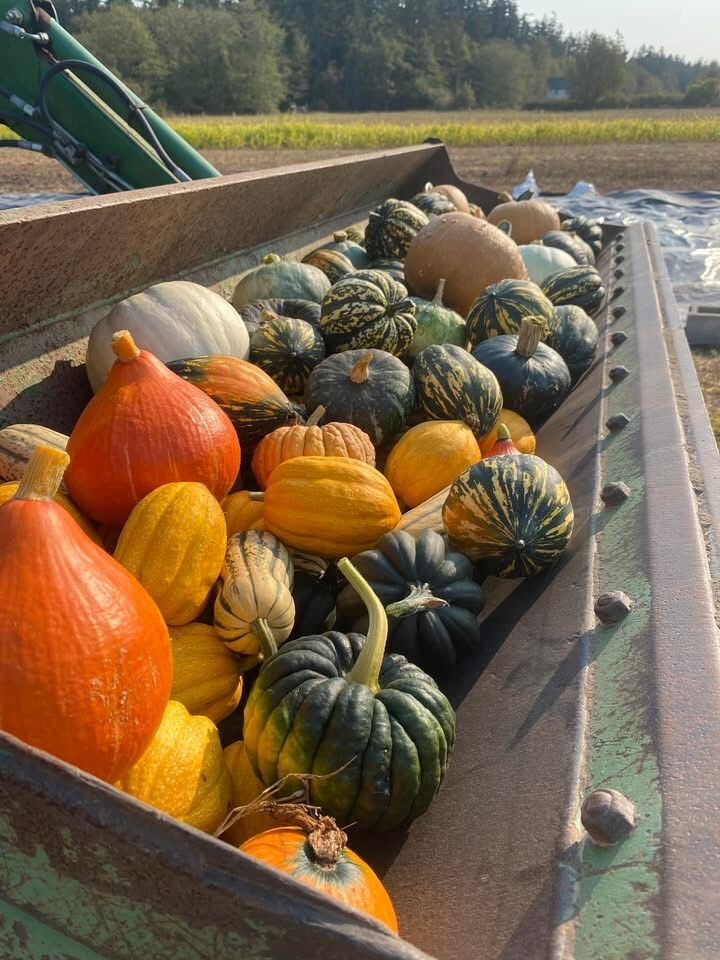
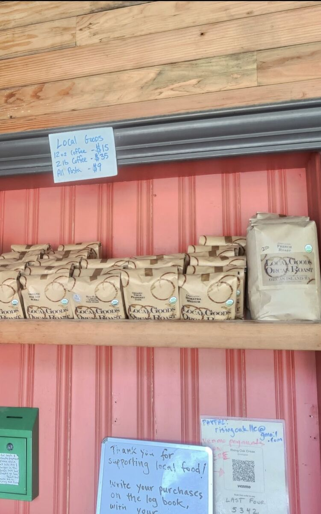
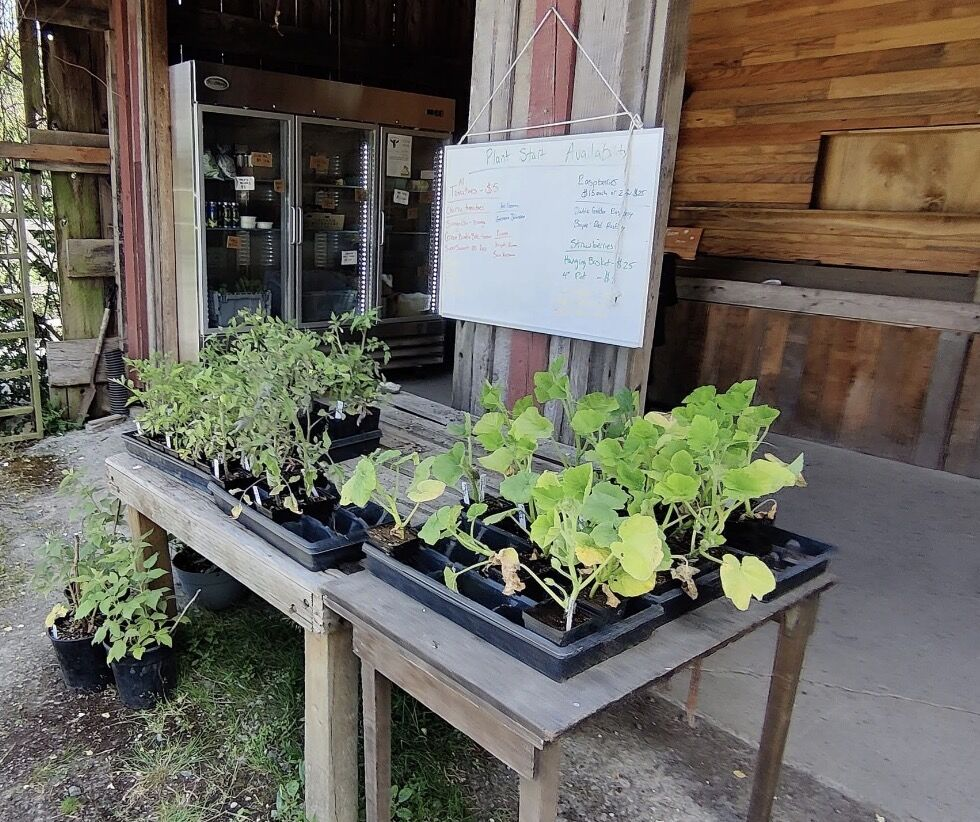
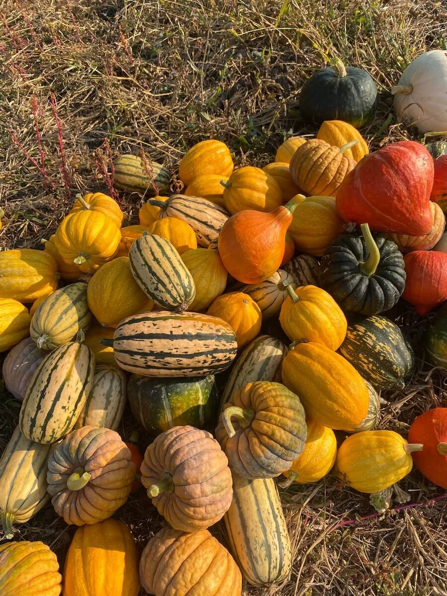
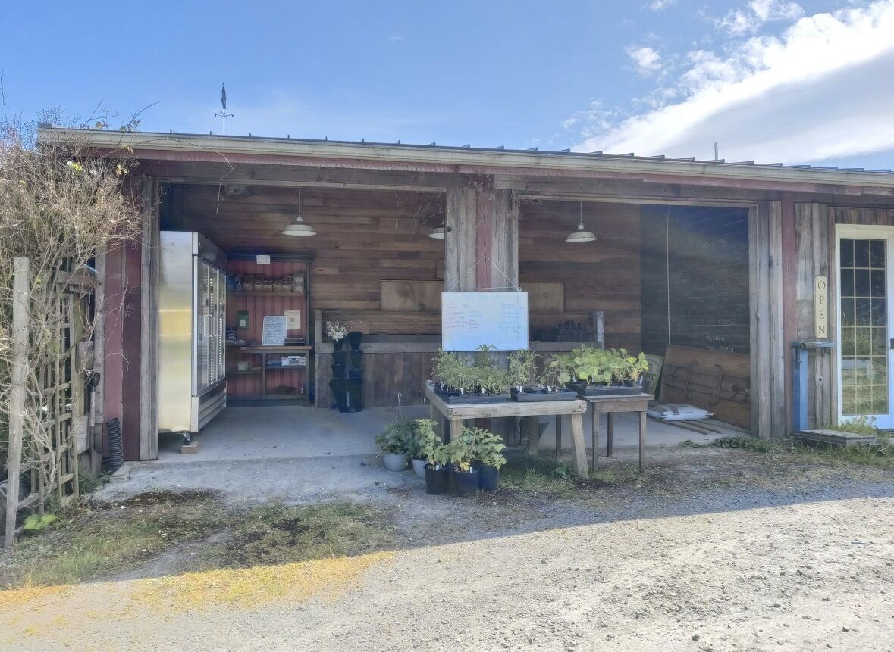

Orcas Island, Washington
Regenerative farming rooted in soil, seed & community

Rising Oak Farm is a small-scale regenerative farm nestled on Orcas Island in Washington's San Juan archipelago. Founded in 2021 by Jesse Herzog, we steward two acres under conservation easement with the San Juan Preservation Trust.
Our work is simple in its ambition and profound in its practice: nourish the land that nourishes us. Every season, every planting, every harvest is guided by this reciprocity — a commitment to leaving the soil richer than we found it.
Our Philosophy
We practice agriculture that doesn't just sustain — it restores. Every crop we plant, every cover we grow, every seed we save strengthens the living soil beneath our feet. This isn't just farming. It's an act of repair.
Regenerative agriculture means working with the land's natural systems, not against them. We build soil health through cover cropping, composting, minimal tillage, and biodiversity — creating an ecosystem where plants, microbes, and the earth itself thrive together.
What We Do
We build living soil through cover cropping, composting, and minimal disturbance — restoring the microbial communities that make healthy food possible.
We're developing regionally adapted seed varieties bred for the unique conditions of the Pacific Northwest — building climate resilience one generation at a time.
From salad greens to storage crops, we grow a diverse selection of vegetables using methods that honor the island's ecosystem and the seasons' natural rhythm.




Our Community
Rising Oak Farm is more than a farm — it's a gathering place for learning and growing together. We believe the future of farming is shared, and that starts with showing up for each other.
We host soil-building workshops, partner with the San Juan Agricultural Guild, and actively support the next generation of young farmers who will steward these islands. Because healthy soil and healthy communities grow from the same root.

Come Say Hello
Stop by the farmstand for fresh, island-grown produce and meet the people behind the plants. We love connecting with the community that makes this work meaningful.
Whether you're an island neighbor or visiting Orcas for the first time, you're always welcome at Rising Oak Farm.
